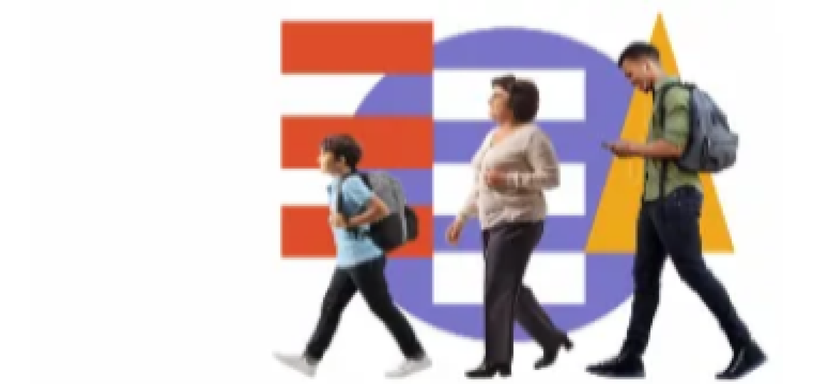
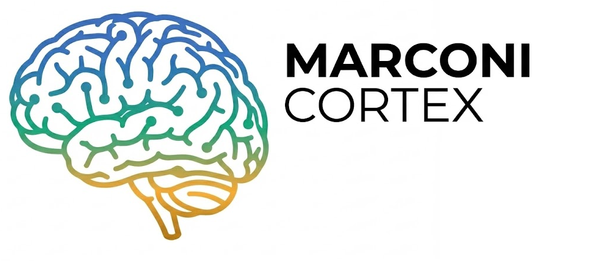

Italiano
Madrelingua (C2)
BENVENUTO NEL MIO SISTEMA
Studente di Informatica del Marconi - Mangano CT focalizzato sulla costruzione di sistemi backend robusti, automazione e data processing con una mentalità di security difensiva.
PROFILO
Mente lucida e disciplinata, in costante
tensione evolutiva tra ordine interiore e
sfida esterna. Non cerco approvazione;
miro alla coerenza tra ciò che sono, ciò
che faccio e ciò che progetto di diventare.
Il mio approccio al lavoro/studio:
Ho una disciplina strutturata e non rigida.
Mi alleno ogni giorno a restare in controllo
senza spegnere la spontaneità,
costruendo abitudini stabili anche nei
momenti instabili. Se inciampo, mi riallineo
prontamente, trasformando ogni ostacolo
in un'opportunità di crescita.
Note medico-legali: Diabete mellito di tipo 1 (in trattamento insulinico)
Possedimento Legge 68/99 ITA – Norme per il diritto al lavoro dei disabili
Madrelingua (C2)
B2
in corso
A1
intelligibilità
PROFILO SCOLASTICO
Frequento l'Istituto Tecnico Industriale Marconi-Mangano di Catania, indirizzo Informatica e Telecomunicazioni - articolazione Informatica. Questo percorso mi sta formando con un approccio tecnico avanzato, dove teoria, laboratorio e pratica continua lavorano insieme in modo molto vicino ai contesti professionali dell'IT.
Durante il diploma ho consolidato competenze su sviluppo software, sistemi e infrastrutture digitali.
In tutti gli anni del triennio scolastico ho ottenuto la borsa di studio per merito, riconoscimento assegnato agli studenti con risultati costanti e comportamento responsabile.
Questo titolo e richiesto nel mercato del lavoro perche combina basi teoriche solide con una forte operativita pratica.
COMPETENZE TRASVERSALI
Guido attraverso l'esempio, assumendomi piena responsabilità delle mie azioni e delle decisioni prese.
Mantengo lucidità sotto pressione, distinguendo la reazione impulsiva dalla risposta consapevole.
Scompongo problemi complessi e agisco con metodo, anche in contesti ad alta intensità operativa.
Mi affido a costanza e coerenza nel lungo periodo, indipendentemente dalla motivazione esterna.
Calibro linguaggio, tono e presenza in base al contesto tecnico, relazionale e professionale.
Organizzo attività e priorità in autonomia, ottimizzando energie e tempi per massimizzare i risultati.
PERCORSO
Una sintesi delle principali tappe formative e delle esperienze che hanno consolidato il mio profilo tecnico.
Oltre 500 ore PCTO maturate tramite percorsi certificativi, laboratori e attività tecnico-pratiche.
Marconi-Mangano, Catania.
Partecipazione attiva alle attività di orientamento della scuola, con supporto informativo e tecnico agli studenti.
Partecipazione alle Olimpiadi di Informatica con consolidamento di logica, problem solving e approccio algoritmico.
Costruire progetti backend solidi, migliorare la leggibilità del codice e rafforzare l'inglese tecnico (obiettivo C1).
Python Essentials 1 & 2, Data Analytics Essentials, Cisco Cybersecurity Path (Multiple), Networking Basics.
STACK TECNICO
Una vista sintetica delle competenze operative che utilizzo nei progetti, suddivise per linguaggi e ambienti di lavoro.
Scala livelli: Base < 50% | Intermedio 50-69% | Avanzato >= 70%
Tecnologie usate per sviluppo backend, web e gestione dati.
Competenze applicate nella gestione di sistemi e workflow tecnici.
VETRINA

Una piattaforma interattiva di quiz in lingua inglese basata sulla storia della Scuola Marconi-Mangano e sulle passate presentazioni educative. Progettato per migliorare le competenze linguistiche richiesto nel progetto conoscitivo Erasmus 2025/2026..

Un gestionale scolastico modulare, pensato per supportare ogni area operativa di un istituto formativo. Nasce dall'osservazione quotidiana di problemi reali: strumenti frammentati, flussi manuali, dati dispersi e poca visibilità..
CONTATTI
Da concetto a codice, costruisco sistemi stabili e performanti su cui puoi contare.